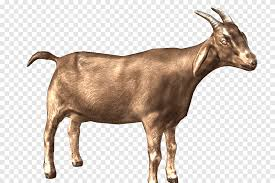
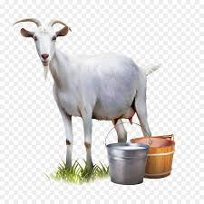

Vemos que existem duas espécies bastante semelhantes de cabras que trazem uma sequência de DNA que pode ser cruzada através de manipulação genética em laboratório.
Todo cruzamento animal é monitorado por diversos
especialistas que buscam entendimento a
cerca de novas espécies que vem surgindo a cada dia.
| Cabras alpinas | Cabras Saanem | |||
|---|---|---|---|---|
| Machos | Fêmeas | Machos | Fêmeas | |
| Adultos | 15 | 20 | 10 | 18 |
| Filhotes | 8 | 13 | 14 | 6 |
O Alpine é uma raça de cabra doméstica de tamanho médio a grande conhecida por sua capacidade de ordenha muito boa. Eles não têm cores ou marcações definidas. Eles têm chifres, um perfil reto e orelhas eretas. A raça se originou nos Alpes franceses. Wikipedia (inglês)
 Cabra Alpina.
O Saanem é uma raça suíça de cabra doméstica. Leva o nome do Saanental no Bernese Oberland, na parte sul do Cantão de Berna, no oeste da Suíça. É uma cabra leiteira altamente produtiva e está distribuída em mais de oitenta países em todo o mundo. Wikipedia (inglês)
 Cabra Saanem
A cabra que grita.
A cabra assassina.
Cabra vs Boi.